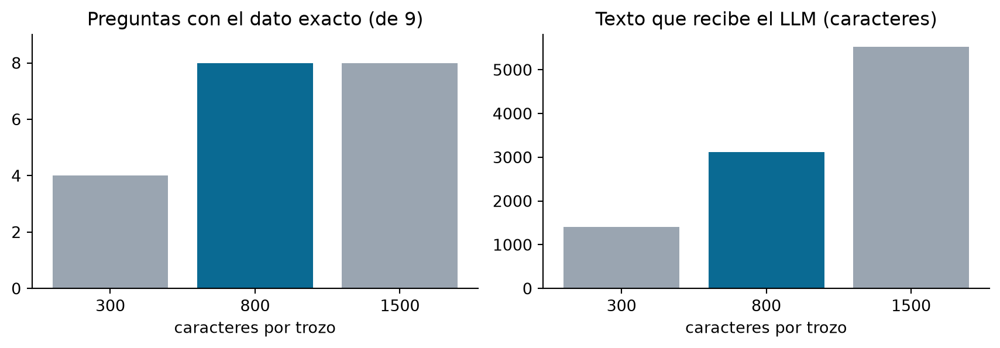

flowchart LR
subgraph Una vez
A[corpus.jsonl] --> B[Trocear<br/>800 caracteres] --> C[Embeddings<br/>e5-small] --> D[(Chroma)]
end
subgraph Cada pregunta
P[Pregunta] --> Q[Embedding de<br/>la pregunta] --> D
D --> T[Trozos más<br/>parecidos] --> R[Prompt:<br/>instrucciones +<br/>trozos + pregunta] --> L[LLM] --> S[Respuesta<br/>con citas]
end
2. Arquitectura y chunking
Esta página explica cómo funciona el asistente por dentro: cómo se trocean los documentos, cómo se buscan los trozos que responden a una pregunta y por qué elegimos cada pieza.
El recorrido de una pregunta
La idea clave: el LLM no aprende nada. Los documentos se trocean e indexan una vez; en cada pregunta solo se busca y se le pasan al LLM los trozos encontrados, como unos apuntes.
Las piezas y por qué
| Pieza | Elegimos | Por qué |
|---|---|---|
| Framework | LangChain | Trae integrados los splitters, Chroma, los embeddings de Hugging Face y Ollama |
| Base vectorial | ChromaDB | Funciona en una carpeta, sin servidor. Para unos miles de trozos sobra |
| Embeddings | intfloat/multilingual-e5-small |
Gratis, en CPU y multilingüe: preguntamos en español y la WADA y World Triathlon están en inglés |
| LLM | qwen2.5:3b con Ollama en local; Gemini en la app publicada |
Ver la página 4 |
Embeddings: convertir texto en vectores
Un embedding es una lista de 384 números que representa el significado de un texto. Dos textos que dicen lo mismo con palabras distintas dan vectores cercanos, y Chroma mide esa cercanía con la similitud del coseno.
def crear_embeddings():
"""El modelo de embeddings, con los prefijos que espera e5. rag.py usa este mismo."""
# normalize_embeddings: vectores de longitud 1, así la distancia coseno es directa.
return HuggingFaceEmbeddings(
model_name=MODELO_EMBEDDINGS,
encode_kwargs={"prompt": "passage: ", "normalize_embeddings": True},
query_encode_kwargs={"prompt": "query: ", "normalize_embeddings": True},
)El modelo e5 se entrenó con el prefijo passage: delante de los documentos y query: delante de las preguntas; sin ellos recupera peor. rag.py usa esta misma función para que los vectores de las preguntas y de los trozos salgan del mismo modelo: si no, no serían comparables.
Trocear
def trocear(documentos, tamano, solape):
"""Parte los documentos con RecursiveCharacterTextSplitter. Los trozos heredan la metadata."""
# Corta primero por párrafos, luego por líneas, luego por espacios: intenta no partir frases.
divisor = RecursiveCharacterTextSplitter(chunk_size=tamano, chunk_overlap=solape)
return divisor.split_documents(documentos)RecursiveCharacterTextSplitter corta primero por párrafos, luego por líneas y luego por palabras, para no partir frases. Los trozos se solapan 100 caracteres para que un dato no quede cortado justo en el borde. Cada trozo hereda la fuente y la página de su documento, y así la respuesta puede citarlas.
El experimento de chunking
El tamaño de trozo no se elige a ojo: lo medimos, como los hiperparámetros del Trabajo 1. Indexamos el corpus tres veces (300, 800 y 1.500 caracteres) y, para cada una de nuestras 9 preguntas con respuesta, comprobamos si los trozos recuperados contienen:
- la página donde está la respuesta, y
- el dato exacto (la cifra), que es lo que de verdad importa.
resumen = chunking.groupby("tamano").agg(
pagina_correcta=("acierto", "sum"),
dato_exacto=("dato", "sum"),
texto_medio=("caracteres_contexto", "mean"),
).astype(int)
resumen| pagina_correcta | dato_exacto | texto_medio | |
|---|---|---|---|
| tamano | |||
| 300 | 9 | 4 | 1411 |
| 800 | 9 | 8 | 3117 |
| 1500 | 9 | 8 | 5526 |

Elegimos 800. Con 300 caracteres casi siempre se encuentra la página, pero el trozo corta las tablas (las penalizaciones o las temperaturas del neopreno) y la cifra se queda fuera: solo 4 de 9. Con 1.500 se acierta lo mismo que con 800, pero el LLM recibe un 77 % más de texto: más ruido para un modelo pequeño y respuestas más lentas. Además, 1.500 caracteres son unos 400 tokens, cerca del máximo de 512 que lee e5.
Buscar: la recuperación en dos pasos
Las preguntas de medicamentos tienen una trampa: “¿Puedo tomar Adolonta?” necesita un trozo de CIMA (Adolonta lleva tramadol) y otro de la WADA (el tramadol está prohibido en competición). Pero la WADA nunca dice “Adolonta”, así que una sola búsqueda no encuentra los dos.
def recuperar(base, pregunta, k=K):
"""Devuelve los trozos más parecidos a la pregunta (Document con su metadata).
En dos pasos, para las preguntas de medicamentos (GUIA_PROYECTO.md, apartado 3):
la WADA habla de "salbutamol", no de "Ventolin".
"""
generales = base.similarity_search(pregunta, k=k)
# Paso 1b: ¿la pregunta nombra un medicamento? Se busca solo en CIMA y se añaden los muy parecidos.
# Hace falta porque los trozos de los reglamentos (largos y en español) suelen ganar en la búsqueda general.
cima = [t for t in generales if t.metadata["fuente"] == "cima"]
cima += [t for t, puntuacion in base.similarity_search_with_relevance_scores(pregunta, k=2, filter=SOLO_CIMA)
if puntuacion >= UMBRAL_CIMA]
if not cima:
return sin_repetidos(generales)
# Es una pregunta de medicamentos: la respuesta está en CIMA + WADA. Los trozos del reglamento
# solo meten ruido, y de CIMA bastan 2 (las demás presentaciones del mismo medicamento se repiten).
cima = sin_repetidos(cima)[:2]
wada = [t for t in generales if t.metadata["fuente"] == "lista_prohibida_wada"]
# Paso 2 (expansión de la consulta): por cada principio activo, buscar qué dice la WADA.
for principio in {t.metadata["principio_activo"] for t in cima}:
wada += base.similarity_search(principio, k=k, filter=SOLO_WADA)
# Además, por palabra exacta: "Tramadol" está dentro de una lista larga de narcóticos
# y el embedding de esa lista no se parece al de una sola palabra.
for nombre in principio.split(" + "):
wada += base.similarity_search(nombre, k=2, filter=SOLO_WADA,
where_document={"$contains": nombre.capitalize()})
return sin_repetidos(cima + wada)Cada paso arregla un fallo que encontró el experimento:
- Búsqueda solo en CIMA con un umbral. En la búsqueda general ganaban los trozos largos del reglamento de la FETRI, que están en español como la pregunta, y “Sumial” no aparecía. El umbral 0,85 está medido: las preguntas de medicamentos tienen un trozo de CIMA con relevancia ≥ 0,857 y las demás ≤ 0,836.
- Expansión de la consulta. Del trozo de CIMA sale el
principio_activoy se busca con él en la WADA. - Palabra exacta (
$contains). “Tramadol” está dentro de una lista larga de narcóticos, y el embedding de esa lista no se parece al de una sola palabra. Buscar el texto exacto lo encuentra. Es una búsqueda híbrida mínima: la fase E completa sería BM25.
Esta es nuestra fase E (extra). Los pasos 1 y 2 usan filtros por metadatos: cada trozo guarda su fuente, y le pedimos a Chroma que busque solo en CIMA ({"fuente": "cima"}) o solo en la WADA ({"fuente": "lista_prohibida_wada"}). El paso 3 añade una búsqueda por palabra exacta a la vectorial.
Estos son los trozos que llegan al LLM con la pregunta de Adolonta:
print(chunking.query("tamano == 800 and id == 8").recuperadas.iloc[0])[cima] [cima] [lista_prohibida_wada, p. 10] [lista_prohibida_wada, p. 5] [lista_prohibida_wada, p. 10] [lista_prohibida_wada, p. 6] [lista_prohibida_wada, p. 17]Dos trozos de CIMA y los de la WADA, entre ellos la página 17, que es donde está el tramadol.
Una limitación medida
La pregunta del Frenadol falla con los tres tamaños: “pseudoefedrina” en español no encuentra la nota de la WADA “Pseudoephedrine: Prohibited when its concentration in urine is greater than 150 micrograms per millilitre”, y buscando en inglés sí. El modelo e5-small pierde precisión entre idiomas con palabras sueltas. Un modelo de embeddings mayor (multilingual-e5-base, bge-m3) o traducir el principio activo antes de buscar lo arreglaría.